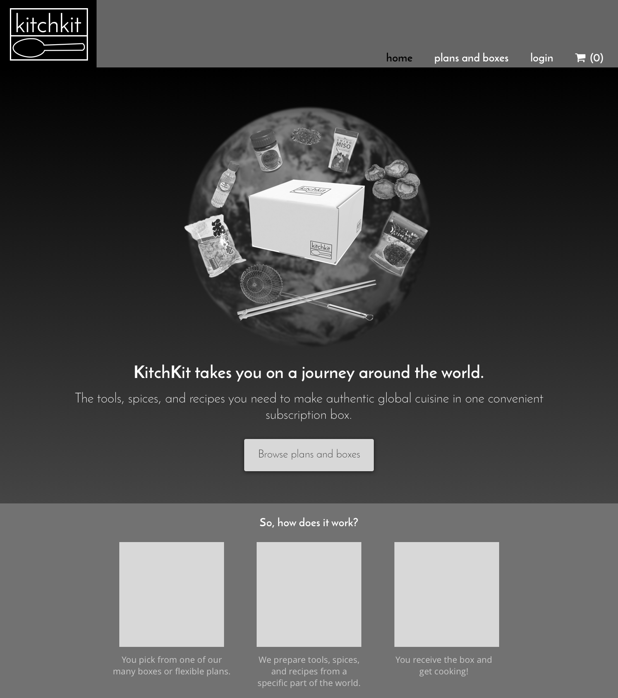

Tasked with creating a website to showcase a product, I conceptualized a subscription box called KitchKit, which sends users kitchen tools, dry ingredients, and recipes from a spotlight country every month. I then designed an intuitive online shopping experience for those looking to order a plan.
The problem was twofold: first, how to design a product that fills a consumer need, and second, how to design a website for ordering the product that both entices users to buy and reduces subsequent customer drop-off.
While there are many food-related subscription boxes out there, most focus on either fusion cuisine or novelty food items, and all come with the expectation that you already have the requisite cooking tools. KitchKit occupies the remaining niche of global pantry staples, plus the tools and recipes needed to cook authentic regional food with those ingredients. The site designed to sell it is easy to navigate and sells the product well. The website’s prototype can be found here.
As an avid fan of both subscription boxes and cooking, I knew I wanted to do something that married the two--but I didn’t know much beyond that. To get a better idea of what users might want in a kitchen-related subscription box, I sent out a survey to cooks and bakers in order to ascertain:
•Current kitchen habits,
•Frustrations related to current kitchen usage, and
•User ideas of an ideal subscription box.
From this survey, I was also able to determine the user demographic that would be most interested in a kitchen-related subscription box and to collect emails for further questions.
The survey revealed a wealth of pertinent information. For example, about 40% of respondents had previously been frustrated by wanting to cook or bake a recipe but not having the necessary tools. 73% of respondents were either interested in obtaining helpful kitchen items or didn’t seek them out but weren’t opposed to them. Respondents who already subscribed to a subscription box liked them because of their convenience, and of the collective group of people who were interested in subscription boxes, the most important elements of subscription boxes were interesting content (90%) and affordability (76%). 25% of respondents said they’d be interested in a kitchen-related box, while 45% said it would depend on the box.
With these responses in mind, I created three personas based off of the demographic information and user needs.
I also started a competitive analysis to look for opportunities and weaknesses in the current market. Using the SWOT model, I analyzed three different food-related subscription boxes--Try the World, Plated, and Blue Apron.
It quickly became clear that while there were an abundance of complete-meal packages, they all focused on fusion meals and ingredients only, and the one service that did provide a more global perspective focused more on Western hemisphere specialty ingredients and didn’t include tools.
With a better idea of the product in mind, I began brainstorming ideas for the name. I decided on KitchKit, a suggestion from my mentor, and went on to the logo. I started with the idea of using a fox with a spatula--a baby fox is called a kit--but decided it was too far away from what I wanted to convey and moved towards the utensil idea. (I did end up keeping the fox as a kind of mascot, though.) In the end, I went with a spoon and encapsulated it and the product name in a box. I also decided on a color scheme. I wanted to use red as the principal color because it evokes hunger, with a lighter blue and grays to balance out the intensity of the red.
Next up, I worked out a user flow and a sitemap.
After that, I moved on to low-fidelity wireframes in Balsamiq. I did a preference test between two options. People preferred the one on the right, so I started working it out in high fidelity in Sketch.
When I sent the high-fidelity prototype out to a selection of users and my mentor, the most popular feedback was that people weren’t sure what was contained within the box--they tended to think it either contained all of the ingredients needed to make a recipe or a pre-prepared meal--so I changed the homepage slightly to make it more clear.
After getting the go-ahead, I added in colors and images. I sent out the prototype for general feedback and implemented the most popular changes--for example, the initial red I was using caused some eye strain, so I toned it down; I also made the calls to action more prominent, added in tiered pricing to encourage people to buy the one-year subscription, and removed an initial idea that would allow users to buy whatever past boxes they wanted and changed it to three test options. I also sent it to the people from the survey who had volunteered their email addresses for more targeted feedback. Specifically, I asked three questions: first, if the site looked trustworthy, second, if it was easy to navigate, and third, if the product was something that they might be interested in were it real. Responses were overwhelmingly positive: all respondents said that the site looked trustworthy and that it was easy to navigate, and 71% said they’d be interested in the product.
This was the project that went the best and I liked the most. It taught me the importance of doing discovery before moving on to anything else, because the survey and the competitive analysis changed the eventual shape of the product more than anything I ever could have come up with on my own. It also taught me that designs that I prefer are not necessarily the designs that others prefer or even the ones that work the best, and that asking for outside opinions is always the way to go. Finally, it emphasized to me the importance of weighing responses amidst conflicting feedback and deciding what is most important to change (that is, things that cause confusion and stress versus things that people dislike for more cosmetic reasons).
The next step for KitchKit would be to raise interest in the product and find financing for the product so that it could be created and marketed to interested parties. It would be particularly important to measure drop-off in transactions and to see where it happened so that the checkout process could be refined further.